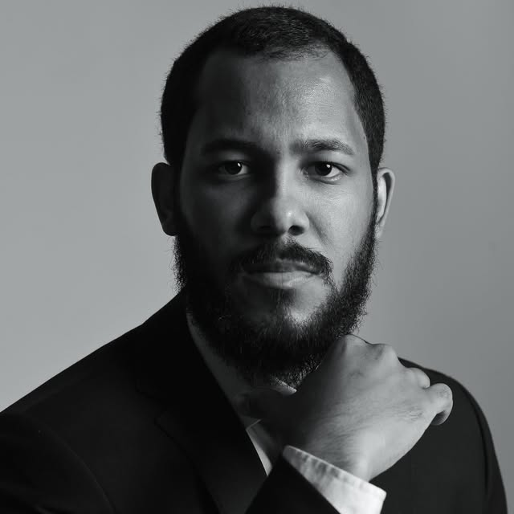

Atendimento próximo e prontidão do início ao fim de cada caso, com orientação clara para quem precisa entender — e não só assinar.

GOV. VALADARES — MGA Tierry Alves Advocacia e Consultoria Jurídica Especializada nasceu para oferecer algo simples de pedir e raro de encontrar: alguém que responde, explica e continua presente enquanto o processo caminha.
O escritório atende com prontidão em cada etapa — do primeiro contato aos desdobramentos do caso — e mantém a porta aberta para dúvidas que aparecem pelo caminho.
Ambiente acolhedor para a comunidade LGBTQ+Orientação clara sobre o caminho possível antes de qualquer decisão — sem juridiquês desnecessário.
Presença ao longo de todo o processo, com atualizações e disponibilidade para as dúvidas que surgirem.
Cada cliente é ouvido com atenção, respeito e sem pressa — o ritmo é o do caso, não o do relógio.
"Excelente profissional, demonstrou muita prontidão durante o atendimento, ao longo do processo e em quaisquer suportes que precisei."— Mariana de Souza Telles Bretas, avaliação no Google
R. Israel Pinheiro, 2801 — Sl 106 e 109
Centro, Governador Valadares - MG
35010-130
Edifício Fortaleza
Sábados, atendimento até 13h. Demais dias, sob agendamento prévio pelo WhatsApp.